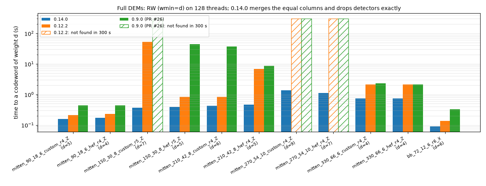

|
Dist m4ri 0.14.5
Computing distance of a classical or quantum CSS code
|
dist-m4ri is a high-performance multithreaded C program and Python library for computing and bracketing the minimum distance of binary classical linear codes, quantum CSS codes, and Stim Detector Error Models (DEMs).
The program implements three main methods (with method=3 as the default):
method=1) - Random Window (RW) Algorithm**: Multithreaded random information set search to find low-weight non-trivial codewords and establish an upper distance bound $d_{\max}$.method=2) - Connected Cluster (CC) Algorithm**: Multithreaded exhaustive depth-first cluster enumeration to compute exact distance or establish a certified lower distance bound $d_{\min}$.method=3, default) - Bracketing Mode (Artillery Fork / Вилка)**: Concurrently runs CC and RW on multiple threads, dynamically balancing CPU cores between CC and RW based on current bounds $[d_{\min}, d_{\max}]$, distance estimate (dexp/dest), remaining RW steps and their measured time, timeout, and the measured scaling characteristics of CC.For a classical binary linear code, only the parity-check matrix $H$ is needed.
For a quantum CSS code, matrix $H_X$ and either $H_Z$ (as finG) or logical operators $L_X$ (as finL) are needed.
Alternatively, a detector error model file from stim can be specified using fdem=[str]. The repeat blocks and shift_detectors instructions of a DEM are unrolled, the detector coordinates are ignored, and the components of a decomposed error (separated by ^) are summed mod 2: a detector or observable listed twice in one error line cancels. Equal columns of the DEM (error mechanisms with the same detectors and observables, common in DEMs generated by stim for circuits with REPEAT blocks: 5-16% of the columns in our examples) are merged (merge=1, the default). This is exact: dropping two equal columns of a codeword gives a lighter one, so the distance does not change. The column indices (outC, finC, start, cbeg, cend, and the printed codewords) are those of the DEM, the codewords found use the first one of each set of equal columns (RW hit counts are those of the merged codewords), and two equal columns of a finC codeword cancel; merge=0 keeps all columns (e.g., to enumerate the codewords with each of the equal columns; the Python option expand=1 expands the list found instead, see Codeword Export).
Detectors of the DEM are dropped if this is verified to be exact (drop=auto, the default): the distance is then found from the smaller DEM without these detectors and the columns touching them, and the codewords found are codewords of the full DEM. E.g., the full DEMs of the Mitten circuits (mitten_270: 1080 detectors, 70254 columns) reduce to the size of the simplified DEMs without the minority-basis detectors (648 detectors, 8910 columns), and RW finds codewords of the minimum weights (9 and 7 for the two circuits) in a few seconds. The binary finds the detectors to drop from the DEM alone, and drop=[file] gives them in a file instead (drop=0 keeps all detectors); see Dropping DEM Detectors.
All matrices with entries in $\text{GF}(2)$ have $n$ columns and obey the orthogonality conditions: $$H_X H_Z^T = 0,\quad H_X L_Z^T = 0,\quad L_X H_Z^T = 0,\quad L_X L_Z^T = I.$$ The last condition is not required: it is sufficient that $L_X$, $L_Z$, and $L_X L_Z^T$ have the same full row rank $k = n - \mathrm{rank}\,H_X - \mathrm{rank}\,H_Z$, the number of encoded qubits (printed with debug=16).
dist-m4ri strictly separates machine-parseable results from informational progress logs:
stdout**: Outputs three space-separated integers: dmin - 1 is the maximum cluster size analyzed without success by CC (dmin = dmax if CC found a minimum-weight codeword).dmax is the weight of the smallest non-trivial codeword found (by RW or CC, or read with finC), or the supplied upper bound dmax=[int] if smaller (0 if none).rw_steps is the number of completed RW steps across all threads (0 if CC found a minimum-weight codeword, or if RW did not run in method=2).dmin = dmax = d, the exact code distance is confirmed.dstop=U (method=2 or 3), the run ends once CC has certified dmin >= U, unless a codeword of weight < U is found; dmax is then the weight of the lightest codeword found (0 if none), never U, since dstop is not an upper bound (see Bracketing Mode).Note on Compatibility: This 3-number output format (
dmin dmax rw_steps) is specific to the multithreadeddist_m4riand is incompatible with the legacy single-threadeddist_m4ri_old(which returned a single integerdor-w).
stderr**: Receives all status banners, thread balancing reports, CC round timings, RW discovery logs, warnings, and confinement profiles, as selected by the debug bitmap (see Debug Output).Searches for low-weight non-trivial binary codewords $c$ such that $Hc = 0$ and $Lc \neq 0$. Threads independently generate random column permutations, compute Gaussian elimination to find information sets, and extract candidate dual-row codewords. For matrices with at least 128 rows, the elimination uses the "Method of the
Four Russians" (as M4RI does, but for the scattered columns of a random permutation): 24 pivots (20 below 512 rows) are found at a time, and every other row is then reduced in one pass with precomputed combinations of the pivot rows, from 4 small tables kept in the cache, instead of one pass per pivot. It finds the same information sets and candidates as the column-by-column elimination, faster for large matrices: e.g., 1.4x for $378 \times 756$, 1.5-2.0x for the Mitten circuit DEMs ($420$ to $792$ rows), 2.3x for a $1500 \times 3000$ LDPC code and a $2736 \times 31392$ circuit DEM, and 2-2.9x for the latter on 32 to 128 threads. Between 128 and 512 rows, where the gain depends on the sparsity of the matrix (0.75-1.4x), each thread times both eliminations in its first steps and uses the faster one (debug&8 reports the choice of thread 0). Only the candidates lighter than the current weight limit are formed (the weight of each candidate is counted first), and they are checked for $Lc \neq 0$ with bit masks of the columns of $L$, in $O(|c|)$ operations: for DEMs, most such candidates are trivial. When a lighter codeword is discovered, all worker threads atomically update the global upper bound $d_{\max}$. The found codewords are kept in a hash table with their hit counts (the number of times RW found each codeword): the collection window for outC (weight up to $w_{\min} + \text{dW}$, where $w_{\min}$ is the minimum weight found) and, for min_hits, a representative set of cov_cws lowest-weight codewords, where heavier codewords are gradually replaced as lighter ones are found.
With the RW pairs (pairs, on by default), a RW step also finds the codewords with exactly two non-pivot columns $a$ and $b$: the sum of the codewords of $a$ and $b$, whose pivot part is the sum of the columns $a$ and $b$ of the reduced matrix (the algorithms of Lee-Brickell and Stern with $p = 2$). Only the pairs of columns which agree on $l$ random pivot rows are checked (the columns are sorted by these bits, their bucket), and in a bucket only the pairs whose weights differ by less than the weight limit; the pairs of columns whose codewords have equal syndromes $Lc$ are skipped (e.g., the many light trivial codewords of a circuit DEM).
Relevant parameters:
steps=[int]: Total number of information sets / RW rounds across all threads (default: 100000).min_hits=[int]: QDistRnd-style automatic convergence stopping criterion (default: 5; set 0 to disable). Stops RW when the average number of hits per codeword $\langle n\rangle$ reaches min_hits, both for the codewords of the minimum weight found and for the representative set of cov_cws lowest-weight codewords (heavier codewords make the estimate more conservative). A single codeword suffices (e.g., a classical code with $k=1$). A lighter codeword is then missed with probability about $e^{-\langle n\rangle}$; see RW Convergence for this empirical estimate, its test (a warning at the end with debug&1), and the information-set estimate.cov_cws=[int]: Size of the representative set of lowest-weight codewords for min_hits (default: 100; 0 for the minimum-weight codewords only). Without outC and maxC, at most cov_cws minimum-weight codewords are tracked (all with cov_cws=0). For codes with fewer than cov_cws minimum-weight codewords, a smaller cov_cws may stop RW earlier.kwin=[int] (alias: win=[int]): Localized column permutation window size $W$: the random column order starts with $W$ columns near a random column, which are thus preferred as pivots, in every RW step (default: 0; for $n \ge 500$, every other RW step then uses an index window of win_hyb consecutive columns, as with win_mode=1, and the other steps use uniform random permutations, also for codewords which are not local in the column order).win_mode=[0|1]: Window construction mode when kwin > 0: 0 for Tanner graph BFS neighborhood, 1 for contiguous column index window (default: 0).win_hyb=[int]: Window size of the hybrid RW steps (with kwin=0 and $n \ge 500$; at most $3n/4$). Default: 0, i.e., 256 columns for a DEM and 512 for matrices. A RW step finds a codeword if all but one of its columns are pivots; the window columns come first in the elimination order, so that they are pivots unless they depend on earlier window columns. In a DEM, whose errors are in time order (stim), a window of $W$ consecutive columns is a slab of errors close in time, which touch only so many detectors: a window of one round of columns ($L \approx 10D$ columns for $D$ detectors per round) has rank about $2D$, so that most of its columns cannot be pivots. The minimum-weight codewords of circuit DEMs are compact in this order (e.g., the weight-18 codewords of the double-gross circuit are final data measurement errors within 177 columns), and windows of 192-256 columns find them 2-10 times faster than 512 for the reduced DEMs of the gross, double-gross, bb_360, and mitten circuits (the double-gross DEM: about 10 distinct codewords of weight 18 per $2 \cdot 10^4$ steps with 256 columns, 0-2 with 512 or with one round), while matrices of codes gain nothing from 256. With debug&1, the binary prints the rounds of a DEM in the input summary (estimated from the time translation of its errors: the number $D$ of detectors per round is the most frequent distance of the two detectors of an error, as of measurement errors, which maps most errors to other errors when their detectors are shifted by $D$; $L = n D / m$ columns per round; none, e.g., for circuits with SWAP routing), and at the end of RW the codewords of the three lowest weights found by the uniform steps and by the window steps (e.g., to see codewords which are not local in the column order).pairs=[int]: The RW pairs of non-pivot columns ($p=2$): the number $l$ of random pivot rows of their buckets (at most 64; 0: off). Default: -1 (auto), $l = \lceil \log_2 (n-r) \rceil$ (about one non-pivot column per bucket), with fewer rows (at least one) while a codeword of the weight $w$ of the upper bound would be kept with the probability $\binom{r-l}{w-2} / \binom{r}{w-2}$ below 0.8 ($r$: the rank of $H$). In a fixed number of RW steps, the pairs found the minimum-weight codewords of circuit DEMs 7-26 times more often per second (bb_72: 7x; gross, surf_d7, mitten_150: 22-26x), the weight 18 of the double-gross circuit in 3000 steps (20 without pairs, with 2% more time per step), 24 for bb_360 in 600 steps (26), and much lighter codewords of classical LDPC codes with a large distance (c1920H: 210 instead of 320 in 1000 steps). For small codes, a step takes 2-5 times longer, but min_hits is reached in fewer steps, in about the same time or less. With debug&1, the binary prints the pairs checked per step and the codewords recorded from the pairs and from the single columns (# RW pairs (p=2, ...)). Not with the experimental ksub.ksub=[int]: Experimental, should not be used (a warning is printed whenever ksub>0 is given for RW, with or without min_hits). Subspace dimension sampled from $\ker(H)$ for cache-resident RW elimination (default: 0 for full-matrix RW; automatically falls back to ksub=0 with a warning when $m < \nu = \dim\ker(H)$, e.g., for DEMs and most quantum codes). Each step reduces the span of ksub distinct rows of a fixed basis of $\ker(H)$, so that a few codewords are found much more often than others: then $e^{-\langle n\rangle}$ is optimistic, and min_hits may end RW early.refresh=[int]: RW step interval for adaptive $\ker(H)$ basis refresh via low-weight codeword exchange and re-echelonization, only with the experimental ksub>0 (default: 5000 when ksub > 0, 0 to disable).wmin=[int]: Minimum distance of interest (stop immediately when a codeword of weight $w \le w_{\min}$ is found; not when collecting codewords with outC or maxC).threads=[int]: Maximum number of POSIX worker threads to run (default: all logical CPUs available to the process, i.e., its CPU affinity mask, e.g., with taskset; subject to automatic throttling unless nothrottle=1 is specified).timeout=[sec]: Maximum execution time in seconds (default: 60.0).Recursively explores connected clusters starting from each column $i \in [0, n-1]$; a cluster started at column $i$ is grown using only columns $j > i$, so that every codeword is found starting from its smallest column. Start columns are distributed dynamically among worker threads via a lock-free atomic counter. If there are few start columns per thread (e.g., for $n / w$ small compared to the number of threads), the start columns are split into work units which also fix the first one to three cluster extensions, for a balanced load (see Multithreading). If noscan=0 (default), CC scans weights $w = 1, 2, \dots, w_{\max}$. When outC is specified, CC exhausts all columns for weight $w$ to collect all unique minimum-weight codewords. With smax=0 (default), the syndrome of a cluster is kept as a bitset (a column is added by flipping its rows), and the last column of a cluster is found by a hash lookup: the syndrome left after the next-to-last column must equal a column of $H$ (instead of a scan of the candidate columns). The clusters and the codewords found (with their hit counts) are the same as with smax>0, only faster (about 3-5 times for CSS codes, and 5-20 times for circuit DEMs). A cluster is extended by the columns of the first row of its syndrome, in the order of the rows of $H$ (every codeword which contains the cluster has a column in that row). With sort_rows=1, the default for matrices (finH or fin), the rows of $H$ are sorted by increasing weight (stable) after reading the input, so that light rows come first: this reduces the CC work for matrices with very different row weights, e.g., 1.7-4.2 times for the matrices with hook columns of an extended CSS distance (rows of weight 5 to 103), while codes with rows of equal weight are not changed. For a DEM (fdem), the default is sort_rows=0: its detectors are in time order, and the first unsatisfied detector of a cluster then has most of its columns before the start column (these are not used), which is better than a light row; sorting the rows made CC 1.3-1.6 times slower for the matrices surf_d5_H.mmx and surf_d7_H.mmx exported from DEMs in examples/ (use sort_rows=0 for such matrices), and up to about 4 times (estimated) for the reduced DEMs of the Mitten circuits. The distance and RW do not depend on the order of the rows (with the same seed, RW finds the same codewords); CC enumerates the same codewords (e.g., with outC), possibly in another order and with other hit counts. With debug=1, the input summary notes that the rows were sorted. The scan ends with the round $w = d$ in which CC finds a codeword (with outC and dW>0, after the extra rounds up to $w = d + \text{dW}$). A known upper bound $d_{\max}$ (from dmax=[int] or from codewords in finC) ends the scan as soon as $d_{\min} = d_{\max}$, unless codewords are collected (outC or maxC). A stop target dstop=U ends the scan once $d_{\min} \ge U$ (with outC, after the rounds $w = U, \dots, U + \text{dW}$), and $d_{\max}$ remains the weight of the lightest codeword found (0 if none). With a timeout, each round is started even if it is predicted not to finish in time (its CC work, the total CC thread time, is extrapolated from the last two rounds with their growth factor, clamped to $[2, 10]$; a note is printed): a round which cannot be completed may still find a codeword of weight $w = d_{\min}$, i.e., the exact distance.
Relevant parameters:
wmax=[int]: Maximum cluster weight to search (optional with timeout>0, the default, with dmax>0, where the rounds end once $d_{\min} = d_{\max}$, or with dstop>0, where they end once $d_{\min} \ge$ dstop; otherwise required for method=2).smax=[int]: Maximum syndrome weight to track for confinement profile (default: 0, disabled for faster CC pruning and the bitset syndromes with hash lookups above; set e.g. smax=5 to compute confinement).sort_rows=[0|1]: Sort the rows of $H$ by increasing weight for CC (default: 1 for matrices, 0 for a DEM; see above).Expert parameters (each prints a # WARNING: to stderr; see Restricting the CC Search below):
noscan=[0|1]: If set to 1 (method=2 only), run CC only at weight $w = w_{\max}$, without scanning smaller weights. The result is not a lower bound unless dmin=wmax is also supplied.start=[list]: Comma-separated list of CC start columns (0-based), e.g. start=0,48,96. Clusters grown from a listed column are not limited to larger column indices (for quasi-cyclic or otherwise symmetric codes).cbeg=[int], cend=[int]: Range $[c_{\text{beg}}, c_{\text{end}}]$ of CC start columns, for splitting one CC calculation into several runs which together cover all columns $0, \dots, n-1$.By default, CC grows clusters from every column $i$ using only columns $j > i$. The expert options start and cbeg/cend (with method=2 or method=3) and noscan (method=2 only) restrict this search. Each of them prints a # WARNING: to stderr, since the reported $d_{\min}$ is then not necessarily a lower bound on the distance. The reported $d_{\max}$ is the weight of an actual codeword, and it is always a valid upper bound.
| Option | CC start columns | Cluster growth | Reported $d_{\min}$ valid |
|---|---|---|---|
| (default) | all, $0 \le i \le n-1$ | columns $j > i$ | always |
start=a,b,c | listed columns only | unlimited | under a code symmetry only |
cbeg, cend | $c_{\text{beg}} \le i \le c_{\text{end}}$ | columns $j > i$ | after combining split runs |
noscan=1 | all, $0 \le i \le n-1$ | columns $j > i$ | only if dmin=wmax is given |
start=a,b,c** (e.g., quasi-cyclic codes): CC clusters are grown only from the listed (0-based) columns, but they are not limited to larger column indices, so that every codeword whose support contains a listed column is found. start=N is a one-element list, and start=-1 (default) means all columns; the list is sorted, and duplicates are removed. The reported $d_{\min}$ (and an exact result $d_{\min} = d_{\max}$) is valid only if a code symmetry maps every minimum-weight codeword to a codeword containing a listed column. E.g., for a quasi-cyclic code with circulant blocks of size $\ell$ (columns ordered block by block), simultaneous cyclic shifts of all blocks are a symmetry, and it is sufficient to list one column per block, e.g., start=0,48,96 for three blocks with $\ell = 48$. Cannot be combined with cbeg/cend.cbeg=[int], cend=[int]** (split runs): CC starts only from columns $c_{\text{beg}} \le i \le c_{\text{end}}$ (default -1: column $0$, respectively, column $n-1$), still growing clusters using only columns $j > i$. Thus the $d_{\min}$ of a single run only covers codewords whose smallest column is in $[c_{\text{beg}}, c_{\text{end}}]$. To split a calculation, e.g., among several machines, run cbeg=0 cend=99, cbeg=100 cend=199, ..., so that every column $0, \dots, n-1$ is eventually listed in one of the runs, and take the minimum of $d_{\min}$ (and of the positive $d_{\max}$) over all runs.noscan=1** (method=2 only): a single CC round at $w = w_{\max}$, skipping weights $w < w_{\max}$. A codeword found only gives an upper bound $d_{\max}$, and $d_{\min}$ is not raised above the supplied dmin. The result is certified only if dmin=wmax is supplied, i.e., if all smaller weights are already known to be absent.start=N was equivalent to cbeg=N cend=N (clusters started from column $N$ using only larger columns; use cbeg=N cend=N to reproduce it), and noscan=1 results were reported as certified even though smaller weights were not checked.dist_m4ri.py): start takes a list of columns (start=[0, 48], start="0,48", or start=0,48 in the CLI), while noscan, cbeg, and cend are disabled: they are accepted for backward compatibility, but ignored with a warning to stderr (run the dist_m4ri binary directly to use them). With the persistent cache, start-list results are stored under the separate key <key>:start=a,b,c; such a run is seeded with the bounds of the main record, and only the always valid $d_{\max}$ and codewords are merged into the main record. The expert option trust_start (CLI: --trust-start or trust_start=1) accepts the start-list results as valid: $d_{\min}$ and rw_steps are merged as well, and an existing exact start-list record is copied to the main record (and the cache file is saved) even if no calculation is needed. For DEM input, the start columns index the error mechanisms in their order in the flattened DEM (after the pmin cutoff). For CSS codes, the same list is used in both sectors.Dynamically partitions the available thread pool between CC (pushing $d_{\min}$ up) and RW (pulling $d_{\max}$ down) to determine the exact code distance as quickly as possible.
outC, CC continues with the rounds $w = d_{\max}, \dots, d_{\max} + \text{dW}$, which enumerate all codewords to export). Before that, CC is limited only by wmax and the timeout.dexp=D (alias: dest=D) is a hint: as long as RW has not found any codeword, CC rounds $w > D$ run only on the threads which cannot run RW (see Multithreading, Throttling & Batch Sizing), i.e., CC pauses if RW can use all threads. CC resumes as soon as RW finds a codeword, or when RW ends.dstop=U (not an upper bound) takes the place of $d_{\max}$ as long as no codeword of weight $< U$ is known: the run ends once the round $w = U - 1$ certifies $d_{\min} \ge U$ (with outC, after the rounds $w = U, \dots, U + \text{dW}$), without waiting for RW, and $d_{\max}$ is the weight of the lightest codeword found (0 if none). E.g., dstop=U wmin=U-1 decides whether $d \ge U$, and for a CSS code with $d = \min(d_X, d_Z) \le U$ known (e.g., from the other sector), dstop=U is all that is needed.timeout. It splits the threads as $$\text{ratio} = \frac{T_{\text{CC}}}{T_{\text{CC}} + T_{\text{RW}}},$$ $$N_{\text{CC}} = \text{round}(N_{\text{threads}} \times \text{ratio}),$$ $$N_{\text{RW}} = N_{\text{threads}} - N_{\text{CC}}$$ with $1 \le N_{\text{CC}} \le N_{\text{threads}} - 1$, where $N_{\text{RW}}$ cannot exceed the number of threads allowed to run RW (see Multithreading, Throttling & Batch Sizing).dmin (no measured round yet) runs on half of the threads.timeout, a CC round gets enough CC threads to finish within 3/4 of the remaining time. A round predicted not to finish in time on all threads is not started while RW runs; once RW has ended, the run ends instead. With steps=0 (no RW), as in method=2, such a round is started anyway, since it may still find a codeword of weight $w = d_{\min}$.wmax, a round predicted to exceed the timeout, or CC paused by dexp), it waits for RW and re-plans when RW finds a new $d_{\max}$ or ends. The run ends once RW has ended and no CC round can be started.min_hits convergence criterion, RW workers stop early and yield 100% of threads to CC to finish certifying $d_{\min}$.steps have been claimed, RW threads join the current CC round instead of waiting for it to finish.Relevant parameters:
dexp=[int] (alias: dest=[int]): Expected code distance, a hint for the thread allocation before RW finds a codeword (see above).dstop=[int]: Stop target for the lower bound (default: 0, off; see above, also for method=2). Unlike dmax, it is not an upper bound, and it is never reported as dmax. A supplied dmin >= dstop ends the run without a search (unless codewords are collected with outC or maxC); otherwise, dstop has no effect with method=1.threads=[int]: Maximum number of worker threads (default: all logical CPUs available to the process; subject to throttling unless nothrottle=1 is specified).nothrottle=[int]: Disable automatic thread throttling (default: 0; CLI flag: --no-throttle).chunk_size=[int] (alias: batch=[int]): Maximum RW step batch claimed at once by a thread (default: 0 for automatic adaptive sizing). When chunk_size=0 (default in Python and binary), chunk size is chosen adaptively based on $n$ and step budget:
In either case, a batch takes at most $\lceil r / (4 N_{\text{RW}}) \rceil$ of the $r$ remaining steps, where $N_{\text{RW}}$ is the number of RW threads (guided scheduling, see below).
timeout=[sec]: Maximum execution time in seconds (default: 60.0; set to 0 for infinite / no timeout). RW threads check the timeout (and the other stop conditions) between RW steps, and also within a step (every 16 columns of the Gaussian elimination), so that even on huge matrices, where a single RW step may take many seconds, the run ends shortly after the timeout.steps=[int]: Maximum total RW steps (default: 100000; set to 0 to run pure CC via bracketing coordinator).min_hits=[int]: Average number of hits per lowest-weight codeword for early RW termination (default: 5; 0 to disable; see method=1).dW=[int]: Extra weight window above $d_{\min}$ to continue collecting codewords ($w \le d_{\min} + \text{dW}$).The parameter threads=[int] specifies the maximum number of worker threads to allocate (default: all logical CPUs available to the process, i.e., its CPU affinity mask, so that taskset -c 0-15 dist_m4ri ... runs 16 threads; with SMT, the sibling hyperthreads typically add 10-50% to the throughput of a fully loaded CPU, more for RW than for CC). By default (nothrottle=0), automatic heuristics clamp thread usage to avoid overhead and resource thrashing:
method=1 and method=3, all threads), to avoid the thread creation and lock contention overhead on tiny workloads; with $m$ the number of rows of $H$ and $W_{\text{RW}} = m \cdot n \cdot \text{steps}$ the RW workload: at most 4 threads for $n < 60$, or for $m \cdot n < 2 \cdot 10^4$ with $W_{\text{RW}} < 5 \cdot 10^7$; otherwise at most 16 threads for $n < 150$ or $m \cdot n < 10^5$, if $W_{\text{RW}} < 2 \cdot 10^8$.method=2): the CC work is not known in advance (it grows rapidly with the weight), so method=2 starts only 4 threads, and the others for the first CC round predicted to take more than 2 ms on the threads started (or once a round has run for 5 ms): tiny runs avoid the start-up of many threads, longer runs use all of them.ksub $\times n$ subspace matrix with ksub>0; about $m \cdot n > 6 \cdot 10^7$ for full-matrix RW), the RW throughput peaks at 32-64 threads whatever the matrix size, so that at most 32 threads run RW, with their total dense working memory within a quarter of the physical memory (at least 2 threads; 1.5 GB if the physical memory is not known). E.g., the reduced DEM of the $[[756,16,34]]$ code ($m = 13230$, $n = 129276$, 0.43 GB per thread) runs 32 RW threads, 1.5 RW steps/s against 0.23 with the 3 threads of the former 1.5 GB limit. CC needs no dense matrices: method=2 is not limited, and in method=3 only the RW share is limited, while CC rounds can use all threads.method=1, the RW share in method=3, where CC rounds can still use all threads; steps=0 in method=3 runs pure CC without RW threads).chunk_size=0 (or omitting it) enables adaptive batching, reducing atomic CAS contention by up to 10x during extended searches ($10^4$ or $10^5$ steps).chunk_size): no thread can monopolize the steps, and the batches shrink towards the end, so that the RW threads finish together.debug&8, the binary reports the work units of each CC round.nothrottle=1 (or --no-throttle in Python) to force dist_m4ri to use the exact number of requested threads without throttling (all threads are started at once, also in method=2), and specify chunk_size=N to override batch sizing.With debug&8, the binary reports the throttling and the thread allocation of every CC round, and with debug&4 a periodic status line shows the progress of the current CC round. A CC round in method=3 may have to wait until the RW threads assigned to it finish their current RW batch.
The RW upper bound $d_{\max}$ is not certified unless CC confirms it. Two estimates of the probability $P_{\text{fail}}$ that RW missed a lighter codeword are available.
Empirical estimate and test, as in the QDistRnd manual, Sec. 3.3. The probability that a RW step finds a given codeword is expected to depend only on its weight, and to decrease with the weight. If, after $N$ steps, the $m$ distinct codewords of the minimum weight $w$ have been found $n_1, \dots, n_m$ times, the probability per step is estimated as $\lambda_w = \sum_i n_i / (N m)$, and a codeword of a smaller weight is missed with probability
$$ P_{\text{fail}} < (1 - \lambda_w)^N < e^{-N\lambda_w} = e^{-\langle n\rangle}, \qquad \langle n\rangle = \frac{1}{m} \sum_{i=1}^m n_i . $$
RW stops once $\langle n\rangle$ reaches min_hits: $e^{-5} \approx 0.7%$ for the default min_hits=5, and $e^{-10} \approx 4.5 \cdot 10^{-5}$ for min_hits=10. Here $\langle n\rangle$ is the smaller of the averages over the minimum-weight codewords and over the representative set of cov_cws lowest-weight codewords (heavier codewords only make the estimate more conservative). The assumption of equal probabilities for the codewords of the same weight can be tested: QDistRnd uses Pearson's statistic $X^2 = (m / n_{\text{tot}}) \sum_i n_i^2 - n_{\text{tot}}$, where $n_{\text{tot}} = \sum_i n_i$, which is distributed as $\chi^2_{m-1}$ for large $\langle n\rangle$. This is the index-of-dispersion test of the hit counts against the Poisson distribution. dist_m4ri applies it to each weight class of the representative set, using the zero-truncated Poisson distribution (codewords never found are not known), and with debug&1 warns at the end if the hit counts are strongly non-uniform: a p-value below $10^{-3}$, a relative spread of the hit rates of at least 1, and, for gamma-distributed hit rates with this spread, a probability to miss a lighter codeword at least 3 times larger than with equal hit rates. Then $e^{-\langle n\rangle}$ is optimistic, and a larger min_hits is advisable; this happens, e.g., for the surface-code circuit examples/surf_d5_H.mmx.
Probability to find a given codeword (information sets; compare the QDistRnd manual, Sec. 3.2). A RW step reduces $H$ (rank $r$) with a random column order; a codeword of weight $w$ is found if exactly one of its positions is among the $s = n - r$ non-pivot columns ($s = \dim\ker H$). For uniformly random information sets, this happens with the probability
$$ P_1(w) = \frac{w \binom{n-w}{s-1}}{\binom{n}{s}} $$
per step ($P_1 = 0$ for $w > r + 1$), and the codeword is missed in $S$ steps with probability $(1 - P_1)^S \approx e^{-S P_1}$. With the RW pairs (pairs, $l$ pivot rows of the buckets), it is also found if exactly two of its positions are non-pivot columns and its other $w - 2$ positions avoid the $l$ rows:
$$ P(w) = P_1(w) + P_2(w), \qquad P_2(w) = \frac{\binom{w}{2} \binom{n-w}{s-2}}{\binom{n}{s}} \cdot \frac{\binom{r-w+2}{l}}{\binom{r}{l}} . $$
Among the weights $d_{\min} \le w < d_{\max}$, the weight with the smallest $P$ is used, and the number of RW steps for a 1% miss probability is reported. Only the steps with uniform random column permutations are counted (not those with localized windows; with ksub>0, the estimate is not available), which makes the estimate conservative (for circuit DEMs, often very much so); on the other hand, as the QDistRnd manual points out, the information sets of a sparse matrix need not be equally likely.
With debug&1, the binary prints $\langle n\rangle$ (# codewords accumulated: ...), the data for the information-set estimate (# RW information sets: n=..., rank(H)=..., steps=...), and the estimate itself together with the non-uniform hit count warning. The Python wrapper (--verbose) prints both estimates for a RW upper bound which is not certified, with the RW steps and time needed for a 1% miss probability, and a model check which compares the observed average hits of the codewords of weight $d_{\max}$ with $S \, P(d_{\max})$.
Example (examples/surf_d5_H.mmx, a circuit-level matrix of the distance-5 surface code; one thread for a reproducible result; the single columns only, pairs=0):
Here, 10000 steps are not enough for min_hits=5 ($\langle n\rangle = 2.08$). The hit counts of the 100 logical operators of weight 5 range from 1 to 33, far from the Poisson distribution ($p = 4.3 \cdot 10^{-116}$), and the probability to miss a lighter codeword is estimated as 0.58 instead of $e^{-\mu} = 0.18$, where $\mu = 1.70$ is the Poisson mean fitted to the zero-truncated hit counts. The information-set estimate for the weight $w = 4$, the hardest to find, gives the miss probability 0.015, and 1% after 10890 RW steps in total (half of them uniform, since $n \ge 500$). In fact, the distance is 5: method=2 with wmax=4 finds no codeword in 0.1 s. With the RW pairs (the default, here $l = 8$), the same run reaches min_hits=5 after 3331 steps (0.73 s), without the warning: a codeword of weight 4 would be found with the probability 0.018 per step instead of 0.000845, and the pairs gave 67400 hits of codewords of weight 5 (18043 distinct ones exist), the single columns 1825.
By default, smax=0 (confinement tracking disabled for maximum CC speed; in .mtx mode with debug&1, a notice is logged to stderr). When smax > 0 (e.g. smax=5), the CC algorithm tracks the minimum non-zero syndrome weight observed for each cluster weight $w$:
With debug=1, detailed per-weight lines are printed to stderr:
outC=[file.nz]**: Saves the discovered codewords of weight up to $w_{\min} + \text{dW}$ ($w_{\min}$: the minimum weight found) in standard NZLIST format (heavier codewords kept only for the min_hits statistic are not exported). With method=2 or 3, once the distance $d$ is known, the CC rounds $w = d, \dots, d + \text{dW}$ enumerate all such codewords (unless the timeout is hit; with a stop target dstop=U below $d$, only the rounds up to $w = U + \text{dW}$ run); with method=1, only the codewords found by RW are exported: merge=1, the default, the codewords found use the first one of each set of equal columns, see the DEM input in the Overview.)*error lines (in the order of the flattened DEM, after the pmin cutoff: with another pmin, the columns and the codewords change). For a Stim circuit, save the DEM generated by dist_m4ri.py in the same run that writes the codewords (--out-dem together with outC; otherwise a warning is printed). A DEM generated again from the circuit (also from one saved with --out-stim) can have different error lines, or the same ones in another order, with another version of stim or other options (e.g., decompose_errors), and then the codewords do not fit it. (The distance cache is not affected: its keys are the DEM contents and pmin.)expand=1, Python only)**: with merge=1, dist_m4ri.py can list each DEM codeword found once for every choice among equal columns (the binary and the cache keep the merged list). With dW at most 1, this is the list of merge=0 (with dW of 2 or more, merge=0 also lists lighter codewords with two equal columns added). The expanded list grows quickly with the weight; with maxC > 0, at most maxC codewords are written, with a warning if some are dropped.drop)**: with detectors dropped from a DEM (drop=auto, the default), the codewords found use only the columns which touch no dropped detector (see Dropping DEM Detectors); use drop=0 to enumerate all codewords of the DEM. (The Python wrapper returns the codewords of a cached record if it has any: use --no-cache or another cache file to enumerate them again with other options.)finC=[file.nz]**: Reads initial codewords from a file to initialize $d_{\max}$ and the codeword hash table (codewords heavier than wmax > 0 are skipped; for a DEM with merge=1, two equal columns of a codeword cancel).dW=[int]**: When set (e.g. dW=1), preserves and exports codewords of weight up to $w \le d_{\min} + \text{dW}$.maxC=[int]**: Limits collection to at most maxC unique codewords (of weight up to $w_{\min} + \text{dW}$).
Notation: column $j$ of a DEM (an error mechanism) flips the detectors $S_j$ and the observables $O_j$ (the column $j$ of $H$ and $L$), and $M$ is a set of detectors to drop.
Dropping $M$ is exact if every column $j$ touching $M$ has a twin: a column $t$ with the same other (kept) detectors, $S_t = S_j \setminus M$, which touches no detector of $M$ (or no column, if $S_j \subseteq M$), with the observables $L_t = L_j + A H_{M,j}$ for one binary matrix $A$, where $H_M$ is the submatrix of the rows of $M$ ($A = 0$ for the usual CSS circuits; found by elimination otherwise). Replacing the columns of a codeword $c$ by their twins (two equal twins cancel) then gives a codeword of the same or a smaller weight which touches no detector of $M$: the kept detectors do not change, and the observables change by $A H_M c = 0$. So the distance is that of the submatrix of the kept detectors and of the columns which touch no detector of $M$ (with their observables), and the codewords found are codewords of the full DEM (in its column indices; they use only the columns which touch no dropped detector). finC codewords are mapped to the twins. The binary checks this for every set $M$ before dropping it (debug=1 prints a summary line, e.g., dropped 8 of 24 detectors (drop=auto), exact: ...).
drop=auto** (the default; also drop=1): the binary searches for the largest set $M$ (with $A = 0$) from the DEM alone (it finds it in all our examples), see below.drop=[file]**: the detectors listed in the file (a text file with the 0-based detector indices, k for Dk, separated by white space or commas, where lines starting with # or % are comments); if dropping them is not exact, a note is printed, and the full DEM is used. The values 0, 1, and auto take precedence over files with these names (write ./1 for a file named 1).drop=0**: keep all detectors.outD=[file]**: writes the detectors dropped, in the format of a drop file, e.g., # 8 of 24 detectors dropped (drop=auto), 0-based followed by 5 7 8 10 13 15 16 18 (only the comment line if none is dropped).The Python wrapper also offers drop=css (the minority-basis detectors of a Stim circuit classified as CSS, checked by the binary in the same way; otherwise, e.g., for a DEM, drop=auto is used, with a warning), and writes the reduced DEM with its maps to the full DEM (--out-reduced, see Python Wrapper). In every case, the bounds found are those of the full DEM.
The binary only sees the DEM, which does not say which detectors belong to which basis. The search rests on four facts (with $A = 0$: the twin of column $j$ is the column $(S_j \setminus M, O_j)$, or none if $S_j \subseteq M$ and $O_j = \emptyset$):
The propagation is needed: dropping every group without an O-minimal column which flips an observable would drop 66 of the 120 detectors of a distance-5 surface code circuit (5 rounds), which is not exact; the propagation gives the 48 minority-basis detectors.
Why it fits CSS circuits. In a memory experiment in the $Z$ basis, a fault splits into an $X$ part (flipping $Z$ detectors and the observables) and a $Z$ part (flipping $X$ detectors). With depolarizing-type noise, both parts are faults themselves, so every column touching an $X$ detector has its $X$ part in $\mathrm{Sub}(j)$: its twin. The pure $Z$ faults are O-minimal, and their detectors are dropped all or nothing. For all CSS circuits we tested (rotated and unrotated surface codes, XZZX codes, Mitten circuits, bivariate bicycle codes up to bb_756 with 1.04M columns, with si1000 or uniform noise), drop=auto finds exactly the minority-basis detectors of the circuit classification of dist_m4ri.py; it finds nothing for a non-CSS color code circuit or for a repetition code.
Limitations. A set which needs $A \neq 0$ (observables which include detectors of $M$) is not searched; use drop=[file]. With missing twins (e.g., with pmin > 0, or biased noise without the $X$ part), fewer detectors or none are dropped (still exact). Columns with more than 64 detectors keep their detectors, as do the detectors in no column. No more seeds are tried after a work budget (about 64 column visits per nonzero of $H$; the groups not tried are kept).
Performance. The search takes 0.08 s for gross_144 (1728 detectors, 67752 columns after merging), 0.36 s for bb_360 (8640 detectors, 346680 columns), and 1.3 s for bb_756 (25704 detectors, 1037610 columns; 5.5 s to read, merge, and reduce the DEM in all), and it drops about half of the detectors and 7/8 of the columns of these DEMs (debug=8 prints the time).
dist_m4ri provides a four-tier help system:
stderr when invoked without arguments or with an unrecognized parameter, listing all allowed parameters concisely.--help (fits 80 rows): Displays the most commonly used parameters with clear descriptions, bunches extra available parameters at the bottom, and points to --morehelp.--morehelp: Displays complete, detailed descriptions of all command-line parameters, debug bitmask flags, and output formats.--morehelp TOPIC (also --morehelp=TOPIC, --help TOPIC, or --help=TOPIC): Displays only the entries of the full help for the parameters TOPIC, under their section headers, e.g., dist_m4ri --help maxC,dW (several names separated by commas; the names are case-insensitive, -, _, and =VALUE are ignored, aliases such as dest or batch work, and debug gives the debug bitmap). An unknown name gives the closest names on stderr, and the exit code 1. The section "Option groups" of the full help lists groups of related parameters: windows (kwin, win_mode, win_hyb), stopping, bounds, dem, matrices, codewords, threading, expert (the CC options whose results rely on assumptions: noscan, start, cbeg, cend), and experimental (ksub, refresh). A group name, also as singular or plural (e.g., dist_m4ri -h window), gives all entries of the group, and a parameter of a group also the other entries of its group, as "see also" (e.g., --help kwin gives the three window entries).--help, --morehelp, and --version print to stdout. Conflicting inputs: fdem together with matrix files (finH, finG, finL, fin), pmin, outD, or drop (other than drop=0) without fdem, and drop with classical=1, are errors; fin followed by finH, finG, or finL is replaced by them (with a warning on stderr), while fin after them is an error. The Python CLI (python3 dist_m4ri.py) has the same help options (see Python Wrapper).
Use ./src/dist_m4ri --morehelp to view exhaustive parameter explanations, including all debug bitmask flags (see Debug Output below).
All diagnostic output goes to stderr; stdout only has the result line dmin dmax rw_steps. The debug bitmap selects the diagnostic output, where lower bits are more informative. The value is a decimal or hexadecimal (0x...) integer. Multiple debug arguments are OR-combined, where the first one replaces the default debug=3: e.g., debug=0 alone is silent, while debug=4 and debug=0 debug=4 both give only the periodic status.
0: silent, except for errors, warnings on the validity of the result (expert options, the experimental ksub, invalid finC codewords), and the confinement profile with smax>0.1 (default) summary: input matrices (sizes, numbers of nonzeros, maximum row and column weights; for a DEM also its rounds, # rounds of the DEM: D=... detectors and L=... columns per round, and for the hybrid RW the window size), warnings, the reason why the run ended (# stopped after ...s: ..., e.g., bounds coincide: dmin = dmax = 5, timeout=60s reached during CC round w=9 (37.5% of start columns claimed), or RW convergence reached), codeword and hit statistics, RW information sets (# RW information sets: ..., pairs=l, ...), the pairs checked per step and the codewords found by the pairs and by the single columns (# RW pairs (p=2, ...)), the codewords of the three lowest weights found by the uniform and by the window steps (# RW step types, w=...), codeword export.2 (default) progress: the run plan (method, threads, RW steps, CC weights, timeout, rng seed), finished CC rounds, new upper bounds, RW convergence.4 periodic status after 1, 2, 4, ... seconds, then every 60 s: the bounds, the RW steps and their rate, $\langle n\rangle$, and the progress of the current CC round (or why no CC round runs).8 thread allocation and timing: throttling, the planning and re-planning of CC rounds, waits for RW, and the predicted vs measured CC work of each round.16 code parameters: $\mathrm{rank}\,H$, $\mathrm{rank}\,L$ (or $\mathrm{rank}\,G$), and $k$, by dense elimination at startup (slow for large matrices).32 codewords: the support (1-based columns) of each new lightest codeword (RW, CC, finC).64 arguments: the command-line arguments, the rng seed, and the files read.128 matrices $H$, $G$, $L$ (for $n < 150$, unless bit 2048 is set).256 codeword dump: all codewords in the hash table with their hit counts (at the end), also those of the RW steps with uniform permutations (u) and with windows (w).2048: no size cutoff for matrices, codeword supports, and per-weight codeword statistics.4096: dist_m4ri_old only, CC recursion and confinement hash traces.Bits 512, 1024, and 8192 to 32768 are reserved; bits 65536 and above are reserved for the Python wrapper (ignored by the binary). E.g., debug=7 adds the periodic status to the default output, and debug=11 the thread allocation and timing.
Before version 0.11.0, a different numbering was used: the old default bits 1 and 2 are now split into 1, 2, and 8 (debug=11 gives similar output); the old 4 (arguments) is now 64; the old 8 (dist_m4ri_old: a line every 1000 RW steps) is now 4; the old 16 (new codewords) is now 32 (the upper bound messages: 2); the old 32 (matrices and codeword list) is now 128 and 256; the old 64 and 128 (hash traces) are now 4096. Repeated debug arguments with different values were rejected.
A Python module dist_m4ri.py is included for high-level scripting, NumPy/SciPy integration, and Stim interoperability without manual threading overhead.
compute_classical_distance(H, ...): Minimum distance of a classical linear code (from NumPy 2D array, SciPy sparse matrix, or .mtx file).compute_quantum_distance(H, G=None, L=None, ...): Distance of one sector of a quantum CSS code, i.e., the minimum weight of a codeword $c$ with $Hc = 0$ and $Lc \neq 0$ (with $L$ constructed from $H$ and $G$ if not given).compute_css_distance(Hx, Hz, Lx=None, Lz=None, ...): Distance $d = \min(d_X, d_Z)$ of a CSS quantum code (two runs of the binary, one for each sector); both Hx and Hz are required (otherwise ValueError; use compute_quantum_distance() for one sector). With outC="cws.nz", the $X$- and $Z$-codewords are saved to cws_X.nz and cws_Z.nz; with finC="cws.nz", the files cws_X.nz and cws_Z.nz are read if they exist, and otherwise the same file is given to both runs (codewords which are not valid in a sector are skipped). A known upper bound dmax on $d$ is not an upper bound of either sector: it is passed to both sector runs as the stop target dstop (and it is not stored in the cache), and the returned $d$ is at most dmax. The two sectors are cached as the quantum codes (H=Hx, G=Hz) ($d_Z$) and (H=Hz, G=Hx) ($d_X$), with L=Lx / L=Lz if given, i.e., with the same cache records as compute_quantum_distance().compute_dem_distance(dem=None, circuit=None, basis=None, rounds=None, out_dir=None, out_dem=None, out_stim=None, p_noise=0.001, force_noise=False, drop=None, outD=None, out_reduced=None, ...): Minimum distance directly from a stim.DetectorErrorModel, stim.Circuit, .dem file, or .stim circuit file (the DEM has all detectors; an error channel which stim cannot write as independent error mechanisms, e.g., a PAULI_CHANNEL_1 without $Y$ errors, is converted with stim's approximate_disjoint_errors=True, which only changes the probabilities of the errors):p_noise (CLI: --p-noise P or p_noise=P; default: 0.001): the strength of the uniform circuit-level noise added to a noiseless circuit (see add_noise() below; 0: none is added, and then a noiseless circuit gives no distance, with a note). A circuit with noise (a noise channel, or a noisy measurement such as M(0.001), see has_noise()) is used as is, unless **force_noise=True** (CLI: --force-noise, also --force): then its noise is replaced by the uniform noise of strength p_noise (with p_noise=0, all noise is removed, e.g., to save the noiseless circuit with --out-stim), e.g., to compare circuits with the same noise model.drop** (CLI: drop=auto|0|css|FILE; default: None, i.e., drop=auto): the detectors which the binary drops if this is verified to be exact (see Dropping DEM Detectors), with the distance of the full DEM (and the full DEM as the cache key), found from the reduced DEM; the codewords found are codewords of the full DEM which use only errors touching no dropped detector. None, True, 1, or "auto": the binary finds the detectors from the DEM (drop=auto). "css": for a Stim circuit classified as CSS, its minority-basis detectors (see strip_minority_detectors(); the basis other than the memory basis basis), passed to the binary in a file (otherwise, e.g., for a DEM, drop=auto is used, with a warning). False or 0: keep all detectors. A file name: the detectors listed in the file, for any DEM. With "css" or a file, if dropping the detectors is not exact, a note is printed to stderr, and the full DEM is used.classify_qubits_thorough, with drop="css" or --verbose) across virtual SWAP permutations and Clifford gates identifies data qubits, $X$-sector and $Z$-sector ancillas, routing qubits, and local data basis rotations (automatically recognizing both standard CSS codes and locally basis-rotated CSS codes such as XZZX).outD** (CLI: outD=FILE): the binary writes the detectors dropped to FILE (see read_drop_file()); with a cached result, the binary runs only for this (with dmin = dmax: no search).out_reduced** (CLI: --out-reduced [PREFIX] or out_reduced=PREFIX): writes the reduced DEM (the errors which touch no dropped detector, after the pmin cutoff, in the order of the flattened DEM, with the other detectors numbered consecutively) to PREFIX_red.dem, and its maps to the full DEM to one JSON file PREFIX_red.json: "detectors" (the original index of each detector of the reduced DEM, i.e., the complement of the list of outD), "errors" (the original index of each error of the reduced DEM, as the column indices of outC), "dropped", "num_detectors", "num_errors", "pmin", "source", "dem" (the DEM file, if any), "drop", and "__version__" (default PREFIX: the basename of the input file without _full, in --out-dir or the directory of the input file; see write_reduced_dem()). The reduced DEM has the same distance, and its codewords are mapped to codewords of the full DEM by "errors".--simple and --full** (simple=, full=): disabled since version 0.13.0 (accepted for backward compatibility, but ignored with a warning to stderr). The simplified DEM (without the minority-basis detectors) is replaced by drop, which is as fast and exact: the distance of the simplified DEM is only a lower bound on that of the full DEM when dropping the detectors is not exact. To compute it anyway, pass the circuit stripped with strip_minority_detectors().--rounds [N]**: Constructs the DEM with N repetitions in the circuit's REPEAT block (rounds=2 by default when --rounds is passed without a number). If the .stim circuit does not contain a REPEAT block, issues a warning to stderr and continues with the original circuit.--out-dir DIR, --out-dem [FILE], --out-stim [FILE]**: Optionally saves the constructed DEM and/or the processed (noisy, round-adjusted) .stim circuit. When --out-dem or --out-stim is passed without a filename (or out_dem=True / out_stim=True), filenames default to <basename>_full.dem and <basename>_full.stim. By default, --out-dir defaults to the directory of the input file. To use codewords (outC) later, save the DEM in the same run: a DEM generated again from the saved circuit may differ with another version of stim (see Codeword Export).merge** (CLI: merge=0|1; default: True): the binary merges the equal columns of the DEM (see the DEM input in the Overview). This is exact, and the cache key does not depend on it; merge=False keeps all columns (e.g., to enumerate the codewords with each of the equal columns).expand** (CLI: expand=0|1; default: False): the codewords returned and written to outC are expanded over the choices among equal columns (see Codeword Export); maxC > 0 limits the expanded list (with a warning if some codewords are dropped).compute_model_lower_bound(circuit, minority=True, out_model=None, return_info=False, ...) (CLI: fdem=FILE.stim --model-lb [--out-model PREFIX]): a certified lower bound on the distance of a Stim memory circuit from its code-sized model, a row reduction of its DEM $(H, L)$, for circuits whose DEM is too large for CC:minority=True (default) the chains of the minority-basis checks are rows as well. Equal columns are merged, and the errors with no effect (e.g., ancilla measurement errors) are dropped: a few columns per data qubit, e.g., $144 \times 720$ for the double-gross circuit without the minority-basis rows.hef Mitten circuits, and the n120 torus circuit, but 1-2 below the distance of the BB circuits (bb_72: 5, distance 6; gross: 8, distance 10; double gross: 12, distance at most 18), of the custom Mitten circuits (mitten_270: 8, distance 9), and of the n60 torus circuit (4, distance 6).dmin (CC on all rows alone would be much slower: gross 75 s for 7, instead of 1.8 s for 8). The bound is stored as dmin in the cache record of the DEM (with "dmin_model"), so that compute_dem_distance() starts CC from it, and the CLI prints the bounds of the circuit. With return_info=True, the info has the model ("H", "L", and "col_map", the model column of each error of the DEM), its sizes, and the bounds of both runs.classify_qubits_thorough(circuit, ...) / strip_minority_detectors(circuit, basis, ..., mask_out=None) / set_circuit_rounds(circuit, rounds): Helpers for Stim circuit Pauli basis tracking, minority-detector stripping (a list mask_out receives one entry per detector: True if it is stripped; compute_dem_distance() uses it for the detectors to drop with drop="css"), and REPEAT block round adjustment.read_drop_file(path) / write_reduced_dem(dem, dropped, prefix, pmin=0.0, num_detectors=None, meta=None): Reads a drop file (e.g., written by the binary with outD): the sorted 0-based detectors and the number of detectors of the DEM from the comment line # N of M detectors dropped ... (None if none); writes the DEM without the detectors dropped to PREFIX_red.dem and its maps to PREFIX_red.json (see out_reduced above).has_noise(circuit) / strip_noise(circuit) / add_noise(circuit, p=0.001, force=False): Checks a stim.Circuit for noise (a noise channel, or a noisy measurement such as M(0.001)); removes all noise (stim's Circuit.without_noise(): the noise channels are removed, the measurements lose their flip probabilities, and heralded noise such as HERALDED_ERASE is replaced by MPAD, which keeps the measurement record); and adds uniform circuit-level noise of strength p (with force=True, after removing the noise of the circuit; p=0: none), with the gates classified by stim.gate_data():
DEPOLARIZE2(p) after the two-qubit gates (CX, CY, CZ, XCX, XCY, XCZ, YCX, YCY, YCZ, SWAP, ISWAP, SQRT_XX, SQRT_YY, SQRT_ZZ, their _DAG versions, CXSWAP, SWAPCX, CZSWAP, and II); a classically controlled gate (e.g., CX rec[-1] 5 or CZ sweep[0] 5) gets DEPOLARIZE1(p/10) on its qubit;DEPOLARIZE1(p/10) after the one-qubit gates (I, X, Y, Z, H, H_XY, H_YZ, S, SQRT_X, SQRT_Y, their _DAG versions, C_XYZ, C_ZYX, and the other variants), and on the qubits idle since the previous TICK;p after $Z$-basis or $Y$-basis ($X$-basis) resets and before measurements, both before and after the measurements with reset (MR, MRX, MRY);MPP, MXX, MYY, MZZ) and the Pauli product gates (SPP, SPP_DAG).compute_dem_distance() adds this noise to a noiseless circuit (see p_noise and force_noise above); for the distance, only which errors are possible matters, as long as pmin=0.
read_sparse_vectors(filepath): Parses NZLIST files into lists of 0-based integer support indices.enable_distance_cache(), disable_distance_cache(), clear_distance_cache(), get_cached_distance(..., start=None), and the cache_file argument of the compute_*_distance() functions (a persistent JSON file with the version "__version__"; the CLI uses tmp_dist_cache.json in the working directory unless --no-cache or cache=FILE is given). For a Stim circuit, get_cached_distance(circuit=...) processes it as compute_dem_distance() does (with the same rounds, p_noise, and force_noise), so that the same DEM gives the cache key. A cache file written by a newer version is ignored (with a warning) and is not overwritten. The CSS records written before version 0.12.0 (keys css:...) are converted into the two sector records: the lower bounds are kept, but an upper bound only if a stored codeword confirms it, or if it is smaller than that of the other sector (earlier versions could store a dmax given to compute_css_distance() as the upper bound of both sectors). Earlier versions ignore a cache file written by a later version (with a warning), and they may overwrite it with their own results: use separate cache files for different versions.do_cws=True or outC=FILE): the codewords of a run are merged with the cached ones (also in the cache record), and they are written to outC (for CSS codes, to the sector files); with finC identical to outC, the codewords already in the file are kept.dstop of all compute_*_distance() functions (CLI: dstop=U): the search ends once CC has certified dmin >= dstop, unless a lighter codeword is found (see Bracketing Mode); the bounds are then [dmin, w, rw_steps] with dmin >= dstop and the weight w of the lightest codeword found (0 if none). A cached lower bound dmin >= dstop answers the request without a calculation.sort_rows of all compute_*_distance() functions (CLI: sort_rows=0|1; default: None, the binary's default, i.e., sorted rows for matrices and the detectors of a DEM in time order): passed to the binary (see CC Algorithm); the result and the cache key do not depend on it.win_hyb of all compute_*_distance() functions (CLI: win_hyb=N; default: 0, i.e., 256 columns for a DEM and 512 for matrices): passed to the binary if nonzero (see RW Algorithm); the cache key does not depend on it. With verbose=True (CLI: --verbose), the binary's summary shows the rounds of a DEM, and the explanation of the bounds the codewords found by the uniform and by the window steps; _last_run_stats holds them as "rounds" (D, L, score) and "rw_step_types" (per weight: the distinct codewords and hits of each kind of step), and the model check of the information-set estimate uses the hits of the uniform steps only.pairs of all compute_*_distance() functions (CLI: pairs=N; default: -1, auto; 0: off): passed to the binary if not -1 (see RW Algorithm); the cache key does not depend on it. _last_run_stats holds the number of rows "rw_pairs_l" (0: no pairs), and with debug&1 the pairs checked per step "rw_pairs_per_step" and the codewords recorded from the pairs and from the single columns ("rw_hits_pairs", "rw_hits_single"); the information-set estimate (rw_infoset_find_prob(), rw_infoset_estimate(): argument pairs_l) includes the pairs.compute_*_distance() functions: start (list of CC start columns, e.g. start=[0, 48]; separate cache record <key>:start=a,b,c) and trust_start=True (CLI: --trust-start; accept the start-list results as valid and copy them to the main cache record). The binary options noscan, cbeg, and cend are disabled in Python (ignored with a warning to stderr); see Restricting the CC Search.ksub of the compute_*_distance() functions and the CLI should not be used: with ksub>0 (and method=1 or 3), the same warning as from the binary is written to stderr.compute_*_distance() functions (e.g., a misspelled option, or steps= for num_steps=) raises TypeError, with the closest parameter name as a hint (win= is accepted for kwin=).python3 dist_m4ri.py): --version also shows the version of the dist_m4ri binary; inputs which are ignored give a warning on stderr (the input is selected in the order fdem, Hx/Hz, finH/finG/finL/fin; e.g., matrices with fdem, pmin, merge, expand, drop, outD, or --out-reduced without fdem, basis, --p-noise, or --force-noise without a Stim circuit, basis without drop=css, fin with finH, classical=1 with finG), where the binary rejects some of these combinations with an error.--help (commonly used parameters, fits 80 rows) and --morehelp (all parameters); --morehelp TOPIC (also --morehelp=TOPIC, and --help TOPIC or --help=TOPIC) prints only the entries of the parameters TOPIC (several separated by commas, e.g., --morehelp maxC,dW; the names are case-insensitive, -, _, and =VALUE are ignored, and aliases such as dest or batch work). An unknown name gives the closest names on stderr, and the exit code 1. As in the binary, the option groups (also stim and cache in the Python CLI) give all their entries (e.g., -h window), and a parameter of a group also the other entries of its group. The binary has the same help options.solver="codedistance" (uses the codedistance library if installed).debug=N (default: 0) is a bitmap, where the bits 1 to 32768 are passed to the binary (see Debug Output; its stderr is then printed), and the higher bits are used by the wrapper: PY_DBG_COMMANDS (65536: the dist_m4ri command lines and run times), PY_DBG_CACHE (131072: cache messages), PY_DBG_CIRCUITS (262144: Stim circuit to DEM conversion details), and PY_DBG_KEEP_FILES (524288: keep and list the temporary files). In the CLI, the value may be hexadecimal (e.g., debug=0x10003), multiple debug arguments are OR-combined, and --verbose implies the bits 1, 2, 65536, and 131072.
gcc with POSIX threads support (-pthread).libm4ri-dev linear algebra library:
The `benchmark/` directory provides quantum CSS codes ($d = 4$ to $\le 34$) and Stim circuits (bivariate bicycle codes including the gross and double-gross codes, Mitten codes, and 2D-local torus BB circuits), their code and circuit-level distances computed with dist_m4ri, and the results of the benchmarks of the program on a 128-thread server: the scaling with the number of threads, and a comparison of the versions 0.14.0, 0.12.2, and 0.9.0. For example, on the full DEMs of the circuits, 0.14.0 finds a codeword of the minimum weight in at most 1.4 s, while 0.12.2 needs up to 52 s or finds none in 300 s, and it certifies the circuit-level distance 9 of the mitten_270 circuit (custom schedule) on its full DEM in 3 min (0.12.1: 2.1 h for the DEM with the minority-basis detectors stripped, whose distance is only a lower bound). Its Section 7 measures the RW window size and the thread throttle of 0.14.3 on the large circuit DEMs (see win_hyb).

If you use this program, please cite:
Other related papers and software: